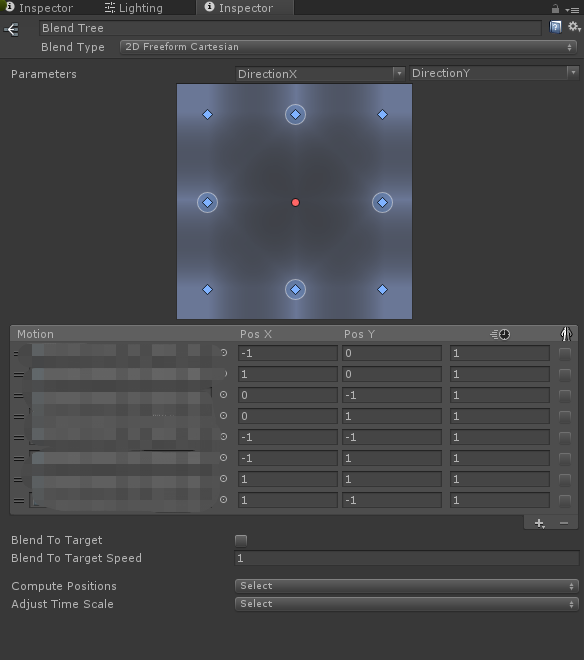

So… I believe that most animators know how to use blendspace in Unreal Engine 4. But there is still something most animators may not know.
Blendspace Setup
An 8-directional walking blendspace, for instance, would require a two blend parameters that drive animation blending by direction X and Y:
We place 8 directional animations (walkForward , walkLeftForward or walkBackward, etc… ) in grid points. And UE4 would calculate animation weight info for each grid point using Barycentric Coordinate:
For a blend position provided by gameplay, UE4 first finds which grid the position locates, and perform bi-linear interpolation inside this rectangle.
More complex blendspace would require larger division number like this:
Difference Evaluation
So… You might believe those two different blend setup below should behave completely the same:
Axis Division 2x2:

Axis Division 4x4:
But actually, they don’t.
I have tested points from (-1, -1) to (1, 1) with step of 0.01. And I wrote some python code to visualize the weight of each animation for each point using matplotlib. This is the image for 4x4 division:
2x2 division:

It is time to compare weight value between 2x2 and 4x4, this is the visualization image for 2x2 - 4x4:
Indeed, they are different. And let’s take a look at the result of 2x2 - 8x8:
Deep Thinking
Why does Epic design their blendspace like this?
I think it is for performance issue.
Since we can pre-compute barycentric coordinate for each grid point in the editor, and we just need to find this certain grid, and bilinear interpolate between each grid point.
So we can save lots of runtime performance. And that is great!
But the key question is: How should we handle this axis division number?
In short, increasing the number of axis division result in a more precise interpolation inside a triangle, at the cost of some animation memory.
Comparison With Freeform Cartesian in Unity
So I have also do the same thing in Unity, with the same motion position setup.

So here is the visualization image:

This is 4x4 - Blend Tree:
8x8 - Blend Tree：